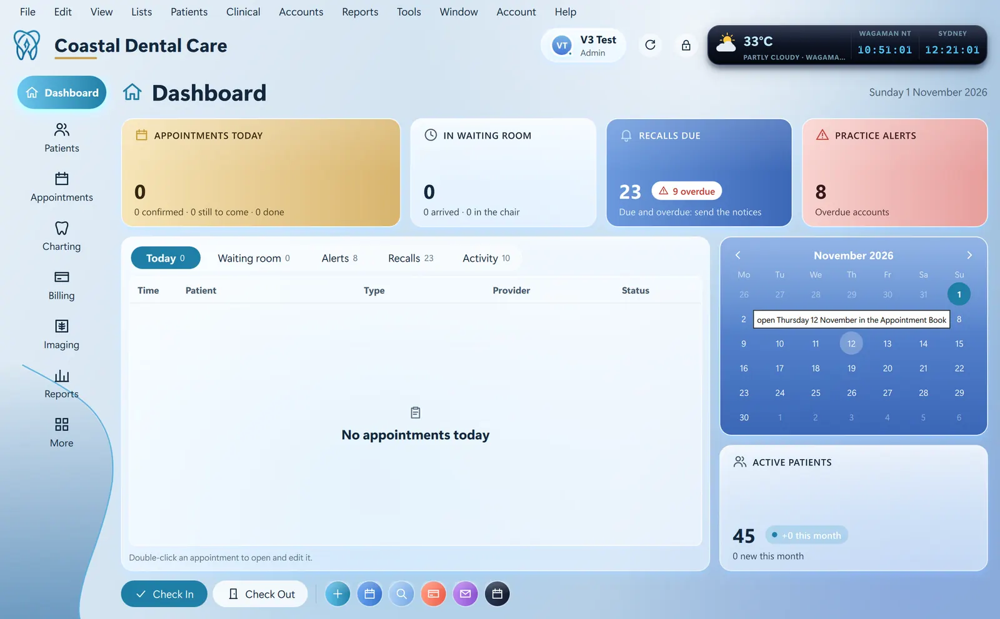
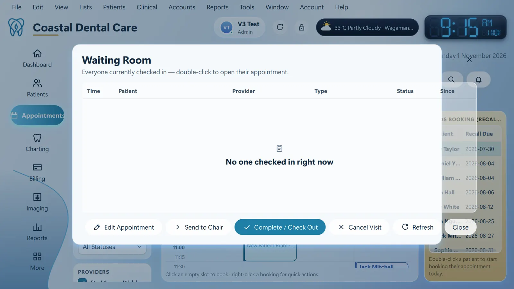
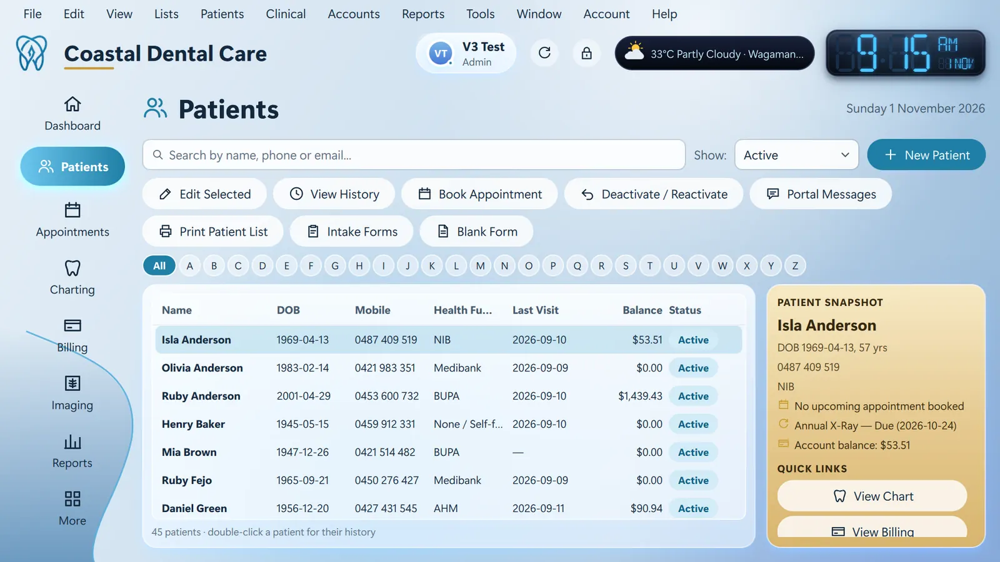
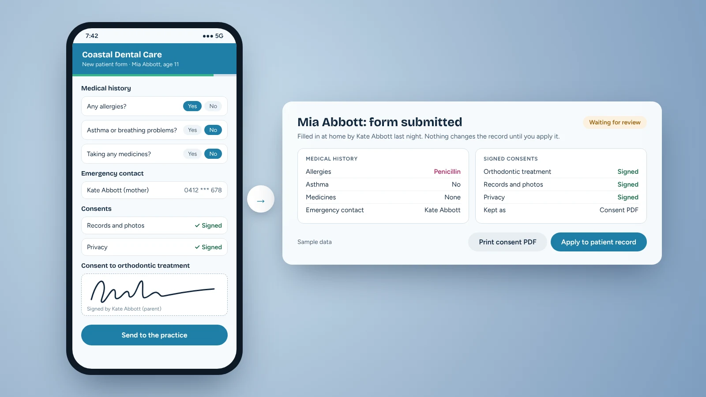
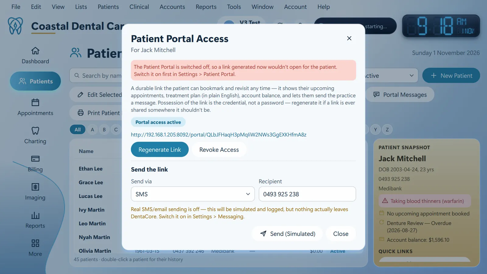
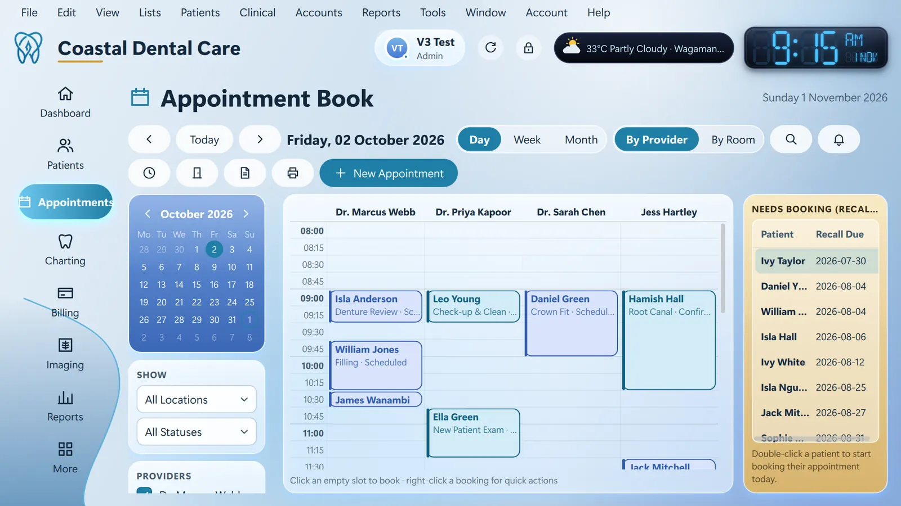
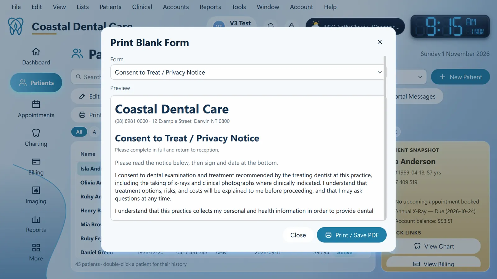
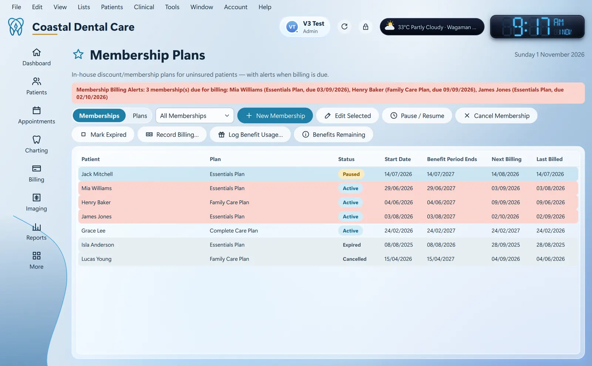

01 / 08 · Front desk & patients
The Dashboard: the practice command centre
Dashboard
A shift starts here. Four coloured cards across the top give the day's numbers, and every card opens the screen behind it.
- Appointments Today with a ring showing confirmed, still to come and done.
- In Waiting Room, Recalls Due and Practice Alerts.
- Five lists on tabs: Today, Waiting room, Alerts, Recalls and Activity. Double-click any row to open the record behind it.
- Practice Alerts gathers overdue accounts, medical alerts for patients booked today, overdue recalls, unconfirmed appointments for tomorrow, low stock, memberships due for billing and new portal messages.
- A month calendar with a gold dot on each booked day. Click a day to open the Appointment Book there.
- Quick buttons for New Patient, New Appointment, Find Patient, New Invoice and Send Reminders.

02 / 08 · Front desk & patients
Check in, check out and the waiting room
Dashboard · Tools → Waiting Room
Check In and Check Out on the Dashboard are the fastest way to move a patient through the day, and the Waiting Room window manages everyone in the building at once.
- Check In lists everyone booked today who hasn't arrived yet. One click moves them into the waiting room.
- The Waiting Room shows each patient, their dentist, their status and how long they've been waiting.
- Move a patient from Arrived to In Chair the moment they're seated, so every screen in the practice stays accurate.
- If another desk has already changed that appointment, DentaCore says so instead of overwriting it.

03 / 08 · Front desk & patients
Patient records
Patients · Ctrl+N · Ctrl+F
The Patients screen is the list of everyone the practice has seen, searchable by name, phone or email as you type.
- Contact details, address, emergency contact, health fund, Medicare and DVA card details, referral source and notes.
- Medical alerts and allergies appear on the Dashboard whenever the patient is booked, and in a banner above their chart.
- Quick links from the record to the patient's chart, billing, images and message history, so you can answer “what do I owe?” or “when's my next visit?” on the spot.
- Find Patient (Ctrl+F) jumps to anyone from any screen.
- Patient history shows every appointment and recall.
- Deactivate a patient who has left without losing their records.

04 / 08 · Front desk & patients
Digital intake forms and signed consent
Patients → Send Intake Form
Instead of a clipboard in the waiting room, new patients fill in their medical history at home, on their own phone, before they arrive.
- Send a one-time link by SMS or email. It works once, for that patient only.
- The form asks for medical history, allergies and emergency contacts, then walks through each consent form the practice attaches.
- Each consent is signed by typing a full name and drawing a signature with a finger, stylus or mouse. A drawn signature can be made required.
- Submitted forms wait for review. Nothing changes the record until a staff member checks it and clicks Apply to Patient Record.
- The signed consent is kept as a PDF.
- A tablet in the waiting room can open a patient's link too.

05 / 08 · Front desk & patients
The patient portal
Patients → Patient Portal
Each patient can have a private web page of their own: their upcoming appointments, their treatment plan in plain English, their account balance and a box to message the practice.
- Send the patient their own link by SMS or email.
- Regenerate the link if it went to the wrong number, or revoke access altogether.
- Messages from patients land in Portal Messages for staff to read and action. Nothing in the record changes on its own.
- Mark Reviewed clears a message once it's dealt with.

06 / 08 · Front desk & patients
Online booking
Settings → Online Booking
Patients can book a real, open appointment slot for themselves from a simple web page, without phoning.
- Choose the hours, slot length, how far ahead patients may book, which days, which dentists and which appointment types are offered.
- Online bookings show a globe icon in the Appointment Book, so you know the patient booked it themselves.
- A new patient who books online is created from what they typed (name, date of birth, mobile, email) and marked so you can complete their details at the first visit.
- Copy Booking Link gives you the address to share. It runs on the practice's own network or VPN, and the practice decides whether to open it to the internet.

07 / 08 · Front desk & patients
Blank forms and patient labels
Tools → Print Blank Form
For a walk-in who isn't in the system yet, print a blank form from the practice's own library.
- Preview and print any form from the Form Library, or save it as a PDF.
- The Admin keeps the library: title, instructions, consent or privacy wording and the fields to fill in.
- Print a patient label at label size, pre-filled with the patient's name, tooth and procedure, for lab work and files.

08 / 08 · Front desk & patients
Membership plans
More → Membership Plans
Offer uninsured patients an in-house plan, such as “$35 a month for two cleans, one exam and 15% off other treatment”.
- Sign a patient up to a plan with its billing frequency and start date.
- Record each payment as Paid, Failed, Skipped or Refunded. DentaCore logs it; your own payment provider takes the money.
- Log Benefit Usage each time a clean or exam is used, so Benefits Remaining is always right.
- Pause, resume, cancel with a reason, or mark a membership expired.
- The Dashboard flags memberships due for billing.
